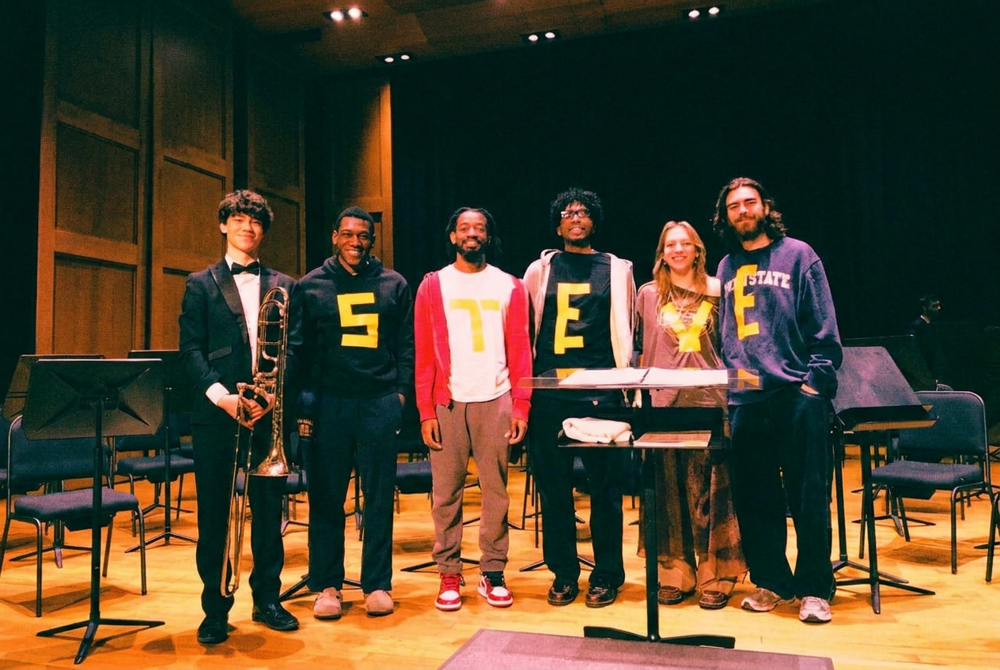
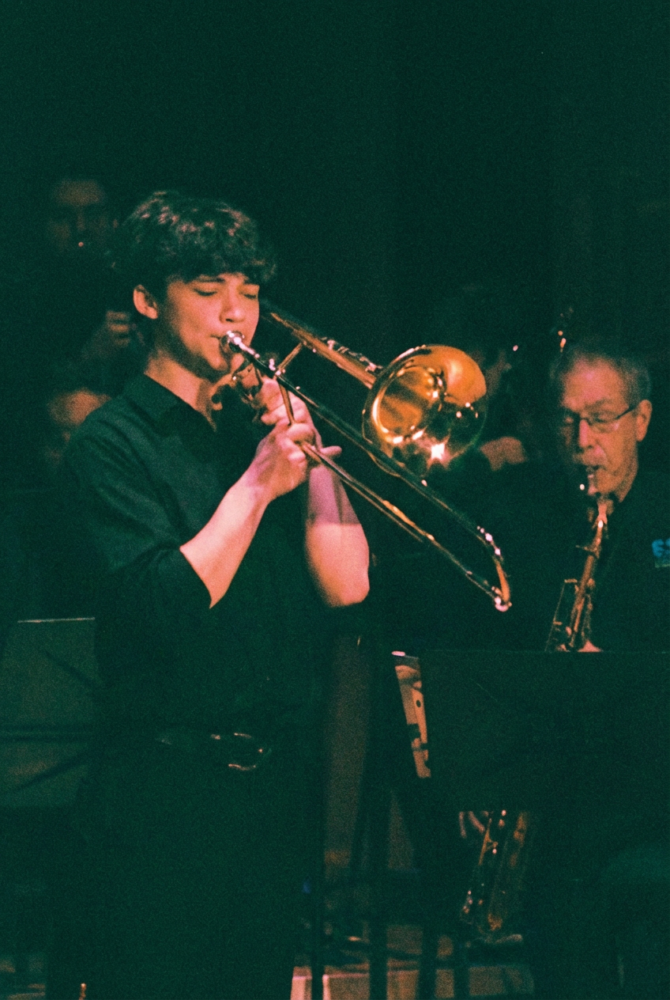
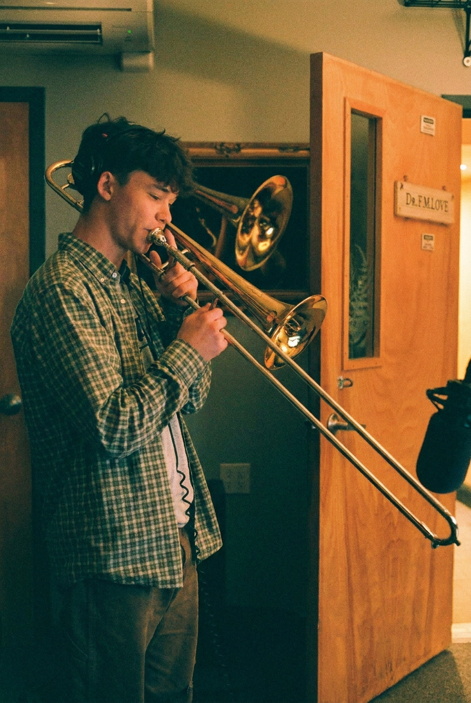
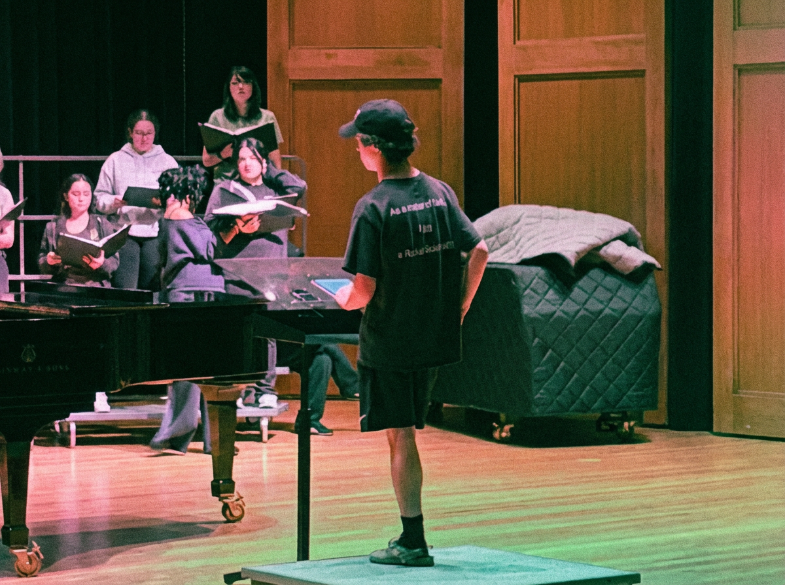
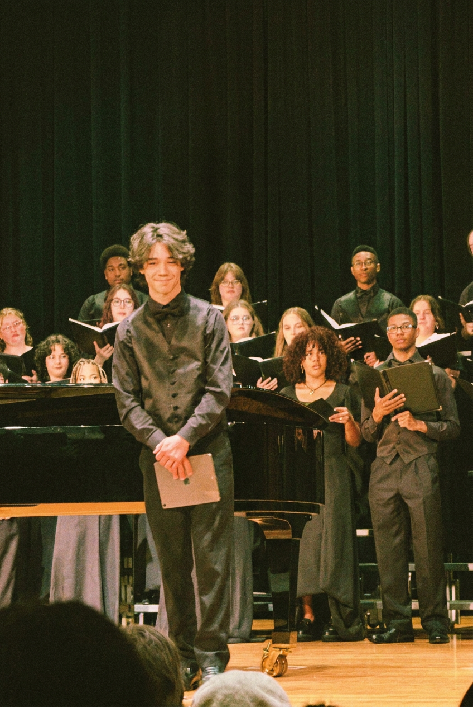
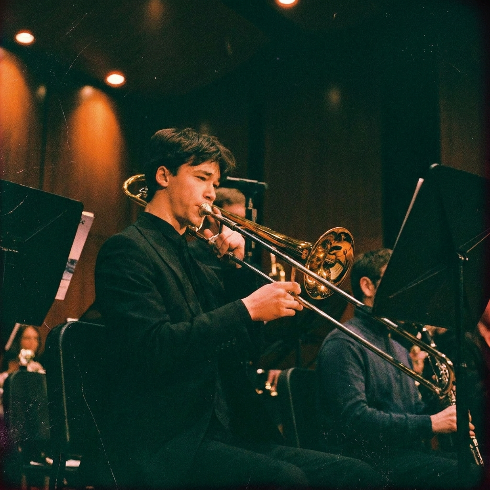
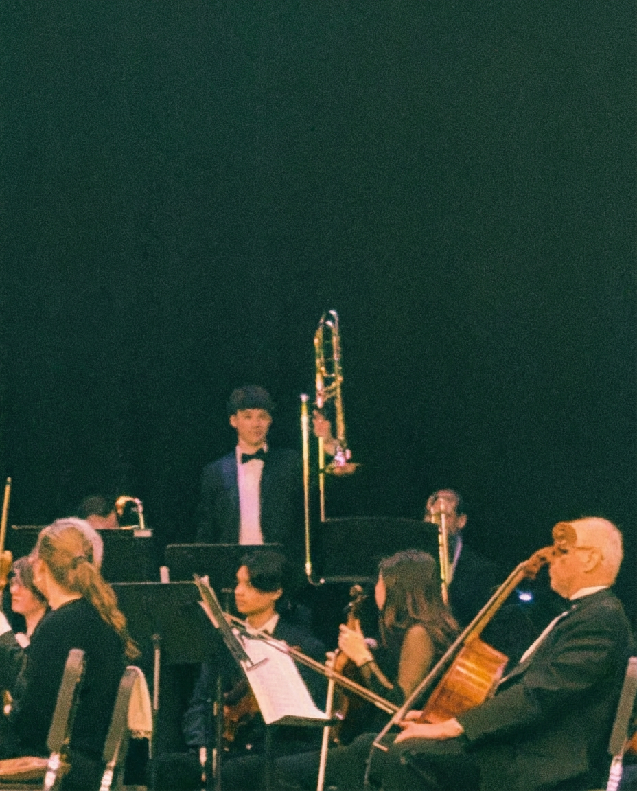

Trombonist · Music educator · Kean University
Steven Friedman is a trombonist and aspiring music educator in the New Jersey/New York area. A current student at Kean University, he is a member of the Symphonic Wind Ensemble, while taking lessons under Wesley Krygsman.
Alongside his playing responsibilities, Steven is a student assistant for the music program, overseeing all social media accounts, band library management, instrumental inventory management, and correspondence with University faculty to organize events.
Steven has played with multiple groups in his local community, including the Ramsey Wind Symphony and Bloomfield Youth Band. During the summer, Steven works in his hometown as an instructor for the Lyndhurst Summer Music Program.
B.M. Music Education
Kean University — Spring 2027
Primary instrument: Trombone
Senior Staff Member
Lyndhurst Summer Music Program — 2020–Present
Teaching low brass lessons to 4th–12th grade, alongside overall musicianship.
Experience
Writing and executing music lesson plans across grade levels and students of all socioeconomic backgrounds. Classroom management, keeping kids on track, adapting on the fly.
Managing the university's sheet music and instrument inventory. Helping students with music research and tracking down what they need.
Started as secretary freshman year, handling operations and communications. Now in year 2 as president — organizing events, running the Instagram, and building out Kean's music community.
Performing trombone in pit orchestra for department productions. Sight-reading, rehearsing under a conductor, and supporting student performers from the pit.
Images from my life







Interests
Crying over the Mets · Watching my friends perform · Shoegaze music · Working at Trader Joe's · My sister's dog · Hobby jogging · Birkenstocks and any cloglike footwear · Thrifting funny shirts · College radio · Brushing my teeth
Contact
Want to connect for gigs, repertoire, playing, anything music related? Send me a message!